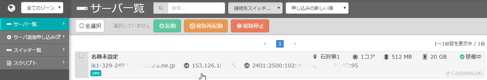
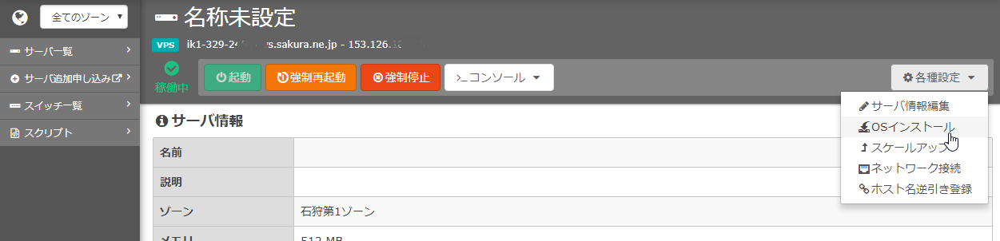
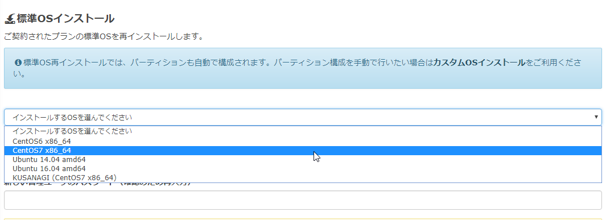

さくらVPS:OSのインストールからターミナルによるSSHログインまで
さくらVPSの契約後、OSのインストールからターミナルログインまでの手順を示す。
-
基本となるOSをインストールするため
さくらVPSの管理ページにアクセスする。
-
一覧から対象のサーバーをクリック選択する。

-
右上の「各種設定」から「OSのインストール」を選択。

-
OSを選択とパスワードの入力等を行い、インストールを実行する。

-
以上でOSのインストールが完了。
-
次にターミナルから対象サーバーにログインしてみる。
$ ssh -l root 153.126.XXX.XXX
パスワードは、上記で設定したパスワードを入力。
-
無事アクセスできれば成功。
この後、セキュリティ関連の設定を施していけばよい。